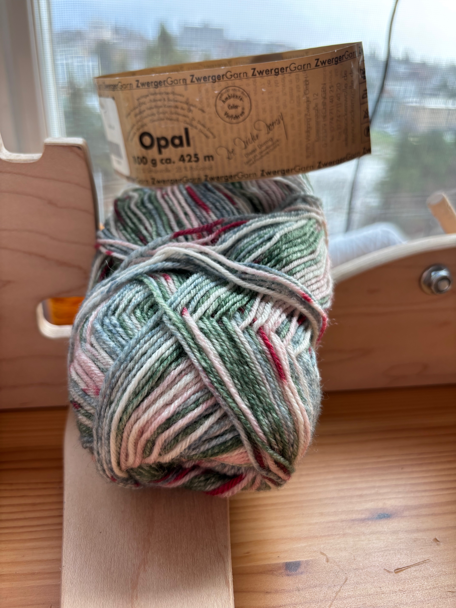
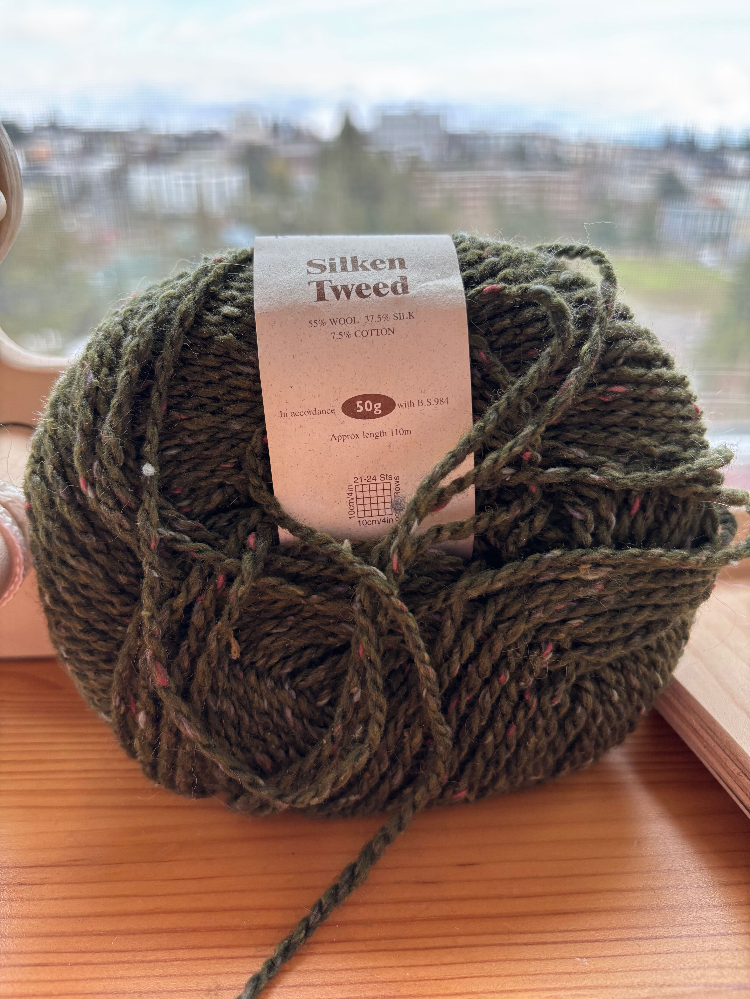
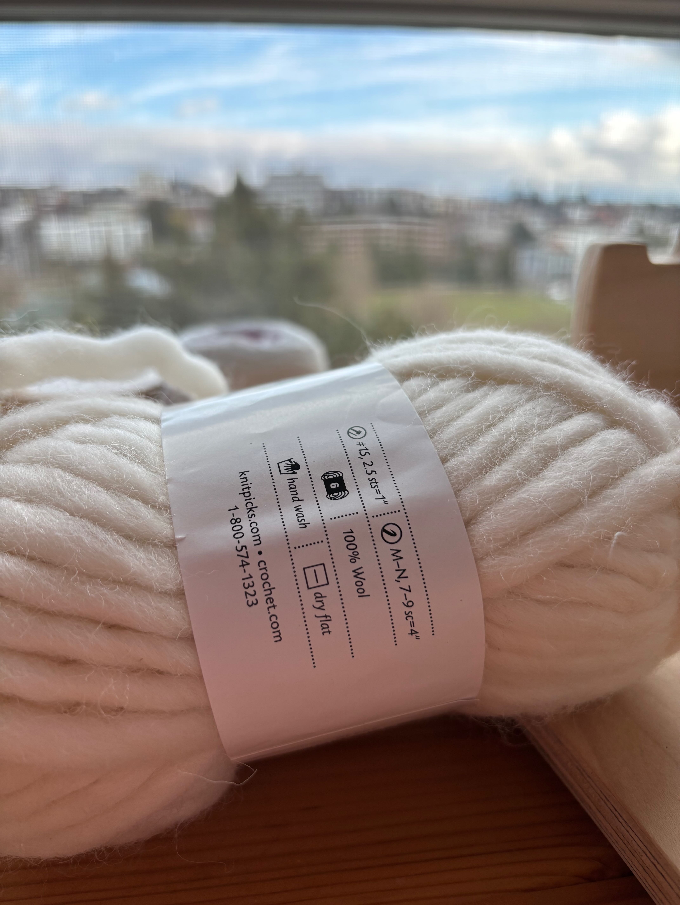
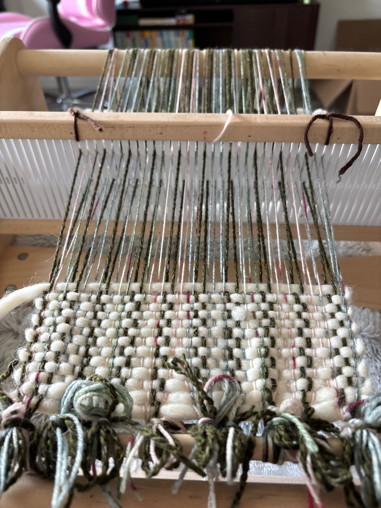
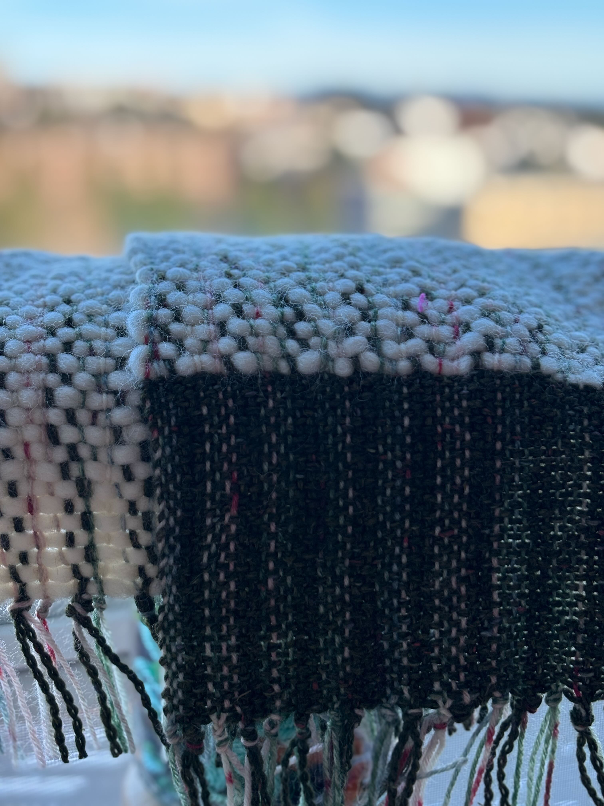

Warp Length: 70"
Warp Width: 7"
Off of Loom Length: ~42"
Off of Loom Width: 7"
Finished Length: ~42"
Finished Width: 6.5"
Pattern: Plain Weave
I'm not entirely sure how I lost so much in the length, but for my next scarf, I'll use a cotton yarn to measure my warp length rather than an acrylic one that probably stretched when I measured it.
Yarns & Colors

Opal
75% Superwash Wool (maybe)

Silken Tweed
55% Wool, 37.5% Silk, 7.5% Cotton

Tuff Puff
100% Wool
Warp & Finished Scarf

